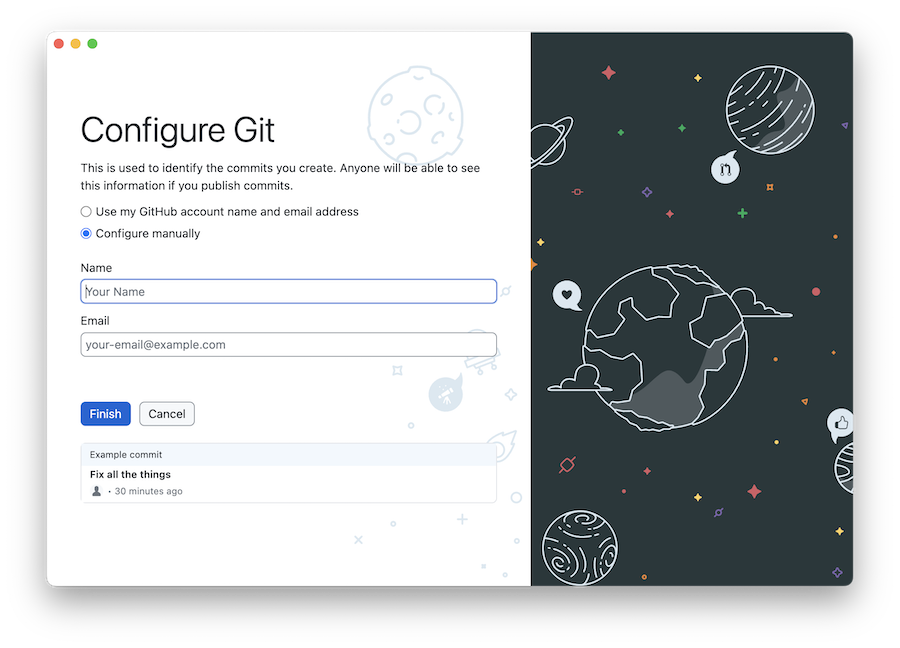
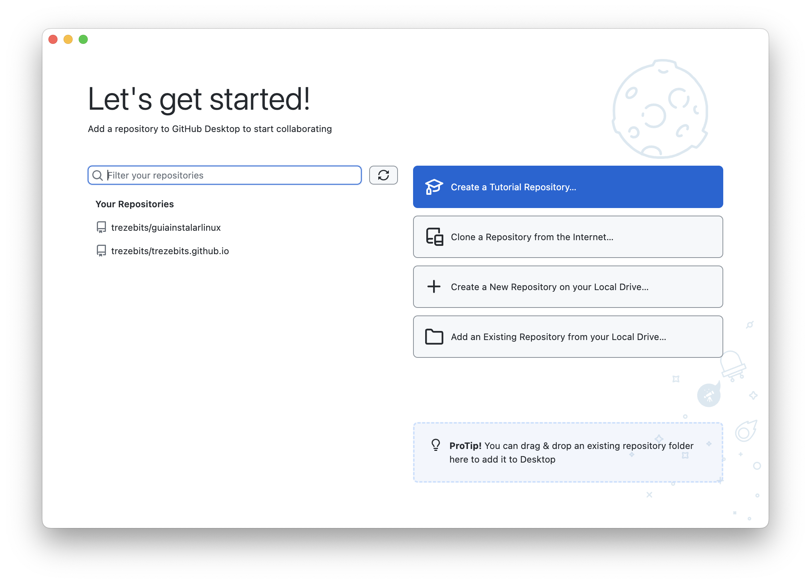
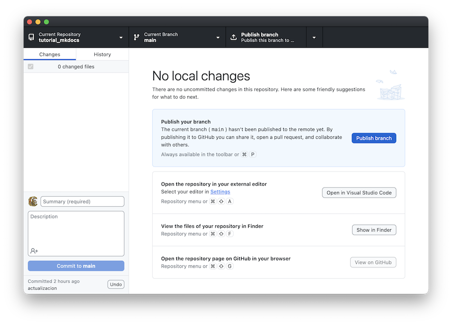

Subir archivos a Internet¶
Los sitios web creados con MkDocs consisten en una colección de archivos en formato HTML que pueden subirse a cualquier servidor web configurado para admitir páginas de tipo "estático", es decir, archivos que se descargan y visualizan en nuestro navegador sin sufrir modificaciones.
Yo utilizo GitHub como repositorio, y hago uso de un servicio llamado GitHub Pages, que permite visualizar la documentación en forma de sitio web. Para subir los documentos utilizo GitHub Desktop, un programa que podemos descargar e instalar en nuestro ordenador, y cuyo uso requiere de que tengamos instalado un programa llamado Git.
Acerca de Git¶
Git es un programa concebido para el control de versiones de nuestros documentos subidos a repositorios remotos. Resulta especialmente útil en el caso de proyectos en los que participan varias personas, facilitando la coordinación del trabajo en grupo.
Git es un software open source, concebido inicialmente por Linus Torvalds, el creador del sistema operativo Linux.
Vamos a utilizar Git para subir nuestros documentos al repositorio de páginas web. Podemos comprobar que nuestro sistema operativo lo trae de serie si abrimos un terminal de comandos e introducimos:
$ git --version
Si necesitamos instalarlo en nuestro equipo, podemos ir al repositorio de software de nuestro sistema operativo, o bien descargarlo de la página web oficial de Git.
Git es un software para profesionales, complejo y con muchas funcionalidades que posiblemente no necesitaremos. En todo caso tenemos un libro sobre la materia de libre acceso y descarga en esta página.
Acerca de GitHub¶
GitHub es una plataforma de desarrollo colaborativo que permite alojar proyectos, tanto personales como comunitarios, utilizando el sistema de control de versiones Git. Cada usuario puede tener uno o varios repositorios, de forma que cada uno de ellos sirve para alojar un proyecto.
Desde junio de 2018, GitHub es propiedad de Microsoft. Aunque esto produjo ciertos recelos iniciales, GitHub continúa siendo una plataforma importante para proyectos de código abierto.
Para registrarnos como usuarios necesitamos una cuenta de correo. Acudimos a la página principal de GitHub, https://github.com, donde veremos dos enlaces:
Sign In, para acceder si ya tenemos un código de usuario y contraseñaSign Up, para crear una nueva cuenta de usuario.
Pulsamos en Sign_Up y seguimos el proceso para crear una cuenta. Se nos pedirá que establezcamos un nuevo nombre de usuario, una contraseña, y se nos pedirá nuestro correo.
Para aprender a manejarnos con GitHub encontraremos los tutoriales en https://docs.github.com/
Iniciar sesión en GitHub¶
En la página principal de GitHub, https://github.com, pulsamos en el enlace Sign In. Se nos pedirá nuestro nombre de usuario o correo electrónico y la contraseña.
Tras iniciar la sesión, vemos que en todo momento tenemos un icono en la esquina superior derecha con nuestra imagen de usuario. Pulsando sobre ese icono, veremos un menú de opciones. Algunas de ellas son:
- Sign out - cierra la sesión y sale de GitHub
- GitHub docs - documentación de GHitHub
- Settings - configuración de nuestra cuenta
- Your profile - muestra un resumen de nuestra cuenta y repositorios
- Your repositories - lista de repositorios
Creando un repositorio¶
Vamos a crear un repositorio para cada proyecto de documentación. Tras desplegar el menú de opciones y pulsar en el enlace Your repositories, aparecerá una lista de nuestros repositorios, todavía vacía. Pulsamos en el botón New. Se muestra un formulario para introducir los parámetros del nuevo repositorio:
- Nombre del repositorio
- Si es público o privado
- Si queremos iniciarlo vacío o con tres posibles archivos:
- README.md - Un resumen explicativo de lo que contiene el repositorio
.gitignore- Se usará al transferir los archivos desde nuestro ordenador. Contiene una lista de ficheros o carpetas que no deseamos incluir en la transferencia- Licencia - Tipo de licencia aplicable a nuestros contenidos. Ver licencias
Una vez dentro del repositorio, en la barra superior tendremos una serie de etiquetas. Las que más vamos a utilizar son:
-
Code muestra la lista de archivos en el repositorio. Si tenemos un archivo
README.mdse muestra su contenido debajo de la lista, como resumen explicativo del repositorio. -
Settings permite configurar el repositorio (¡incluida su eliminación!).
Una vez que tenemos una cuenta en GitHub y hemos creado un repositorio para nuestro proyecto, vamos a volver al entorno local de nuestro ordenador y preparar la subida de archivos.
Compilar el proyecto¶
Tras redactar nuestros documentos, tenemos que compilarlos y crear un sitio web en nuestro ordenador:
mkdocs build
Tras obtener los archivos del sitio web en la carpeta site, vamos a añadir algún archivo que queramos incluir en la subida:
-
creamos un archivo llamado
README.mdcon una descripción del proyecto. -
añadimos un archivo
.gitignore.mdcon una lista de archivos que no queremos subir. Recuérdese que, en Linux/Mac, los archivos con un prefijo.se consideran como ocultos. En esa lista de archivos a ignorar, ponemos:.DS_Store .gitignore
No voy a subir el propio archivo .gitignore. Por otra parte, como yo tengo un Mac de Apple, también excluyo .DS_Store, que es un archivo oculto en las carpetas de los Mac para controlar la visualización del contenido de la carpeta en el ordenador.
Una vez compilada la documentación, nos situamos en la carpeta que contiene los archivos a subir:
$ cd site
Seguidamente hay que configurarlo como repositorio git:
$ git init
Esto crea en la carpeta site una carpeta oculta que se llama .git, que contiene información para coordinar la transferencia de documentos.
Podemos crear un archivo de comandos para automatizar todo el proceso. En Windows, será un archivo de texto con la extensión .bat. Basta con hacer doble clic sobre el mismo para que se ejecute.
En los ordenadores Mac, para poder ejecutarlo tenemos que pulsar con el botón secundario del ratón sobre ese archivo de texto, seleccionar la opción "Obtener Información, y establecer Abrir con: Terminal, para que siempre que pulsemos sobre el archivo se ejecute en una ventana de Terminal de comandos.
El texto del script puede ser algo así como:
cd /home/nombreusuario/Documents/proyectos/nombreproyecto
mkdocs build
cp README.md site/README.md
cp ignorar.md site/.gitignore
cd site
git init
Véase que en la carpeta raiz de cada proyecto tenemos dos archivos README.md y .gitignore, que copiamos a la carpeta /site en cada compilación.
GitHub Desktop¶
GitHub Desktop es un programa que permite interaccionar con el repositorio desde nuestro ordenador. Una vez descargado e instalado, al ejecutarse muestra lo siguiente:

Pulsamos sobre el botón sign in. Al conectarnos a GitHub en el navegador web, se nos pedirá que activemos la autorización para que GitHub Desktop acceda a nuestros repositorios.
Seguimos con el proceso de configuración e introducimos nuestras credenciales de GitHub:

Una vez configurado, cada vez que iniciemos GitHub Desktop tendremos un resumen de nuestros repositorios. Pulsamos en Add repository from local drive:

Vemos un resumen del repositorio. En la esquina superior izquierda tenemos una lista desplegable para seleccionar otros repositorios o crear uno nuevo:

Creamos el repositorio remoto pulsando en Publish branch.
Subir contenido¶
Una vez creado el repositorio en GitHub y enlazado desde GitHub Desktop, la primera vez que vayamos a subir contenidos, pulsar en el enlace Publish branch.
En sucesivas actualizaciones,
Configurar como GitHub Pages¶
Una vez subida la documentación, accedemos a GitHub con nuestra contraseña de usuario y verificamos el contenido del repositorio.
El siguiente paso es activar GitHub Pages para que los documentos sean visibles como páginas web. Hacer lo siguiente:
- Entrar en el repositorio. Veremos la lista de archivos subidos
- Pulsar en Settings
- En la barra lateral, pulsar en Pages.
- En el apartado
Sourceseleccionar la única versión (branch) que tenemos:main - Pulsar en
Save
Aparecerá el mensaje:
"Your site is ready to be published at "https://usuario.github.io/repositorio/".
Pasado un breve lapso de tiempo, si refrescamos la página, veremos el mensaje:
"Your site is published at "https://usuario.github.io/repositorio/"
Gracias a los servicios de GitHub Pages, nuestra documentación será accesible mediante la URL:
https://usuario.github.io/nombreproyecto/
sustituyendo "usuario" por nuestro nombre de usuario y "nomproyecto" por el nombre del repositorio.
Página principal del sitio web¶
Todos nuestros proyectos se visualizan mediante la URL:
https://usuario.github.io/nombrerepositorio/
Podemos navegar de un proyecto a otro insertando enlaces con estas URLs.
Podemos crear una página principal accesible mediante https://usuario.github.io/. Para ello, debemos alojarla en un repositorio llamado https://usuario.github.io/ (cambiando usuario por nuestro nombre).
Por ejemplo, mi página principal es un documento alojado en un repositorio alojado en https://github.com/trezebits/trezebits.github.io.